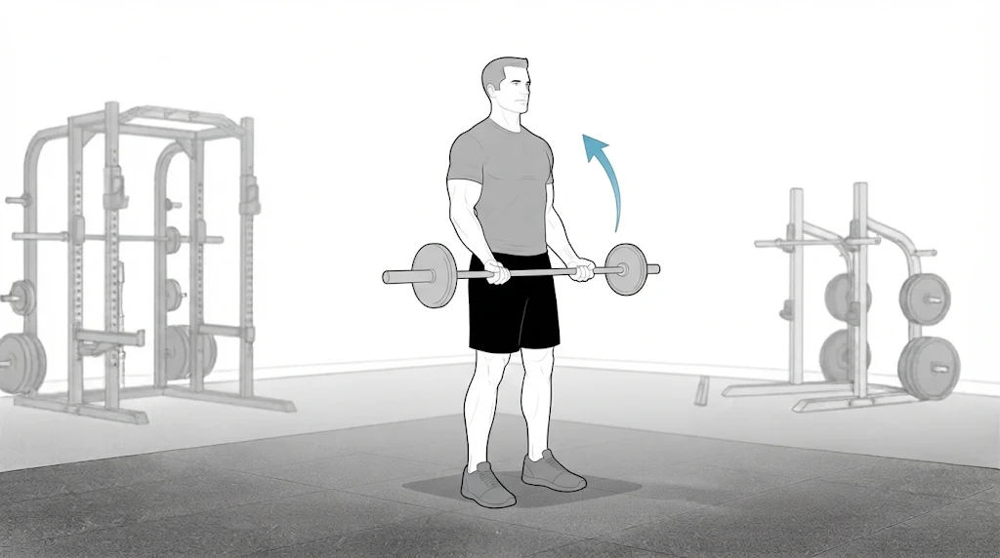
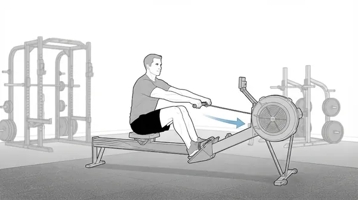
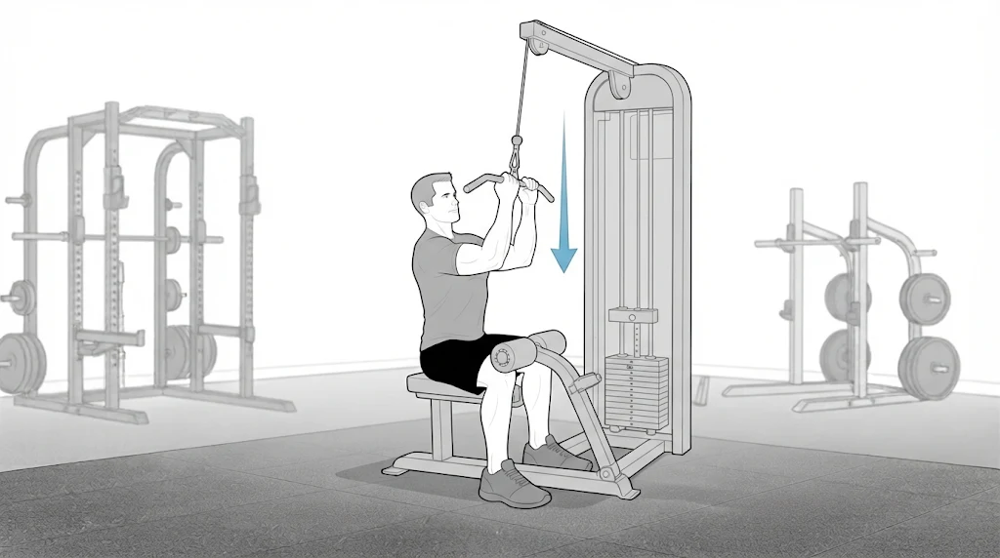

Biceps curl

Stand with your feet hip-width apart, holding the bar palms up, arms straight.
1. Bend your elbows to raise the bar to your shoulders.
2. Slowly lower it until your arms are straight.
Variation: with dumbbells, alternating left and right arm.
Tip: elbows tucked in and back straight, without swinging to lift the weight.
Rowing machine

Sit on the rowing machine, feet strapped in, handle in hand, arms straight and knees bent.
1. Push with your legs, then pull the handle to your lower ribs while leaning back slightly.
2. Return in reverse order: arms straight, torso forward, then knees bent.
Variation: seated low cable row, to work the back without the cardio.
Tip: the power comes from your legs first; keep your back straight throughout the movement.
Lat pulldown

Sit facing the machine, thighs locked under the pads, holding the bar palms facing you (underhand grip).
1. Pull the bar down to your upper chest while squeezing your shoulder blades.
2. Slowly let it back up until your arms are straight.
Variation: wide grip, palms facing forward, to target the upper back more.
Tip: don't pull the bar behind your neck, and keep your torso leaning back slightly.
Machine biceps curl

Sit on the machine with the backs of your arms on the pad, handles in hand.
1. Bend your elbows to bring the handles towards your shoulders.
2. Slowly lower them without fully straightening your arms.
Variation: preacher curl with a barbell or a dumbbell, one arm at a time.
Tip: your arms stay on the pad, only your forearms move.